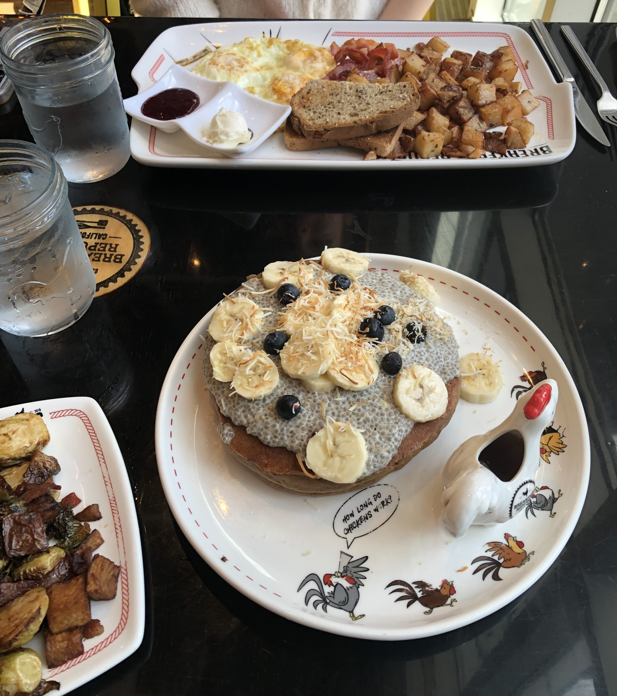

Food for Thought
Where it all Started
I discovered my passion for cooking and baking at a young age, helping my mother in the kitchen. Following in her footsteps, I developed a love for baking, drawn to its precision and my sweet tooth. As you explore this page, I hope it inspires you to find your own passion for cooking and baking.
My Favorites
- Breakfast: The most important meal of the day by far has the yummiest options.
- Lemon Ricotta Pancakes
- Omlets
- Sour Dough French Toast
- Dessert: A few of my favorite sweet treats that always hit the spot.
- S'mores Cookies
- Pavlovas
- Key feature or outcome #3
Camera Eats First
Explore some of my favorite dishes from this past year


Favorite LA-Area Restaurants
Hear more about the food in my hometown that opened a door for my passion of food.